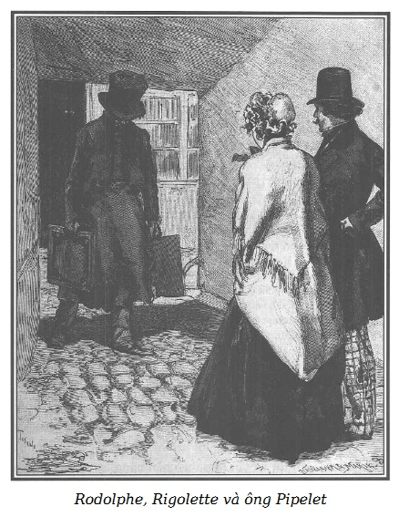

Chào cô láng giềng, – Rodolphe nói với Rigolette – tôi không làm phiền cô chứ?
– Không, ông láng giềng của em. Trái lại, em rất vui được gặp ông, bởi em đang rất buồn.
– Đúng, tôi thấy cô xanh xao, hình như cô đã khóc.
– Thật, em đã khóc. Còn gì nữa! Khổ thân Germain! Này, ông đọc đi. – Và Rigolette đưa cho Rodolphe lá thư của người tù. – Thật não lòng! Ông nói với em là ông quan tâm đến anh ấy. Đây là lúc để chứng tỏ điều đó. – Cô nói thêm trong khi Rodolphe chăm chú đọc. – Cứ để lão Ferrand dơ bẩn đó làm hại mọi người! Lúc đầu là Louise, giờ là Germain. Ồ, em không ác, nhưng nếu có tai họa nào đó đến với lão chưởng khế thì em thích lắm. Buộc tội cho một thanh niên thật thà như thế ăn cắp mười lăm nghìn franc! Germain, anh ấy là hiện thân của trung thực, lại còn ngăn nắp, hiền lành, hay buồn. Trời, đáng phàn nàn biết mấy, giữa đám phản phúc trong nhà tù! A, ông Rodolphe, từ hôm nay, em thấy cuộc sống không phải tất cả đều màu hồng.
– Thế cô định làm gì, cô láng giềng?
– Định làm gì à? Tất cả những điều Germain yêu cầu em, càng sớm càng tốt. Em đã đi, nếu không có cái việc rất gấp mà em đang hoàn thành và chốc nữa em sẽ đem đến phố Saint-Honoré, trong khi đến phòng của Germain tìm các giấy tờ mà anh ấy nói. Em còn rất nhiều việc phải làm ngoài công việc của mình và em phải ở tư thế làm được. Đầu tiên, bà Morel muốn em đi thăm Louise trong nhà tù. Có lẽ rất khó nhưng em sẽ cố gắng. Nhưng khổ thật, em không biết nhờ ai…
– Tôi đã nghĩ đến điều đó!
– Ông… ông láng giềng của em?
– Đây là cái giấy phép.
– May quá! Ông có thể xin cho em một cái để vào nhà tù của Germain. Anh ấy sẽ vui biết bao nhiêu!
– Tôi sẽ giúp cô đi thăm Germain!
– Ồ, cảm ơn ông Rodolphe.
– Cô không sợ đi vào thăm nhà tù của cậu ấy à?
– Chắc chắn lần đầu tiên tim sẽ đập rất mạnh… Nhưng cũng được thôi. Có phải khi Germain sung sướng, em thấy anh ấy lúc nào cũng sẵn sàng đi trước mọi ý nguyện của em, đưa em đi xem hát, giúp em sắp xếp mấy chậu hoa, đánh bóng căn phòng… Thế thì bây giờ anh ấy gặp hoạn nạn, đến lượt em phải giúp anh ấy. Bé nhỏ như con chuột nhắt, không làm được gì nhiều, em biết, nhưng những gì có thể làm được, em sẽ làm, anh ấy có thể tin ở em. Anh sẽ thấy em có phải là bạn tốt không. Này, ông Rodolphe, có một điều làm em buồn, là anh ấy không tin em. Nghĩ rằng em có thể khinh anh ấy, em xin hỏi ông, tại sao? Lão chưởng khế keo kiệt buộc anh ấy tội ăn cắp, thì có làm sao đối với em? Em biết rất rõ điều ấy không có thật. Bức thư của Germain chẳng đã chứng tỏ cho em rõ như ban ngày là anh ấy vô tội, là em không thể nào tin anh ấy là thủ phạm. Chỉ cần thấy anh ấy, biết anh ấy, là chắc chắn tin anh ấy không thể làm một việc bẩn thỉu. Phải ác như lão Ferrand mới đặt điều, bịa đặt ra như vậy.
– Hoan hô cô láng giềng của tôi, tôi thích sự bất bình của cô!
– Ô này, em muốn là đàn ông để đi tìm lão chưởng khế nói: ‘A, ông quả quyết là Germain ăn cắp của ông. Này, lão già nói láo. Anh ấy không ăn cắp bao giờ! Cho lão già đây này!” Và pằng, pằng, pằng! Em sẽ đánh cho lão nhừ tử!
– Cô có một cách xử lý rất chóng vánh. – Rodolphe nói, mỉm cười vì sự sôi động của Rigolette.
– Và cũng tức lắm kia! Như Germain nói trong thư, mọi người sẽ đứng về phía ông chủ chống lại anh ấy, bởi vì ông ta giàu, được trọng vọng, còn Germain chỉ là một thanh niên nghèo, không ai che chở, trừ phi ông có cứu giúp hay không. Ông Rodolphe, ông quen những người rất có từ tâm. Vậy chúng ta có phải làm gì không?
– Cậu ấy phải đợi xét xử. Một khi được trắng án, tôi tin như thế, nhiều điều có lợi cho cậu ấy sẽ đến, tôi cam đoan với cô. Nhưng này, cô láng giềng của tôi, kinh nghiệm cho tôi biết tôi có thể tin vào sự kín đáo của cô.
– Ồ, vâng, ông Rodolphe, em không bép xép bao giờ.
– Vậy thì, không để ai biết, và cả Germain cũng không được biết có những người bạn đang quan tâm đến cậu ấy, bởi vì cậu ấy có bè bạn.
– Thật sao? Anh ấy biết thì lại càng tăng thêm can đảm!
– Đúng thế! Nhưng cậu ấy không thể im lặng mà không nói ra, như vậy lão Ferrand sẽ biết, sẽ sợ và sẽ đề phòng. Sự nghi ngờ của lão sẽ được thức tỉnh và lão vốn rất gian xảo, sẽ khó mà tóm được lão. Như thế sẽ rất dở, bởi vì không chỉ Germain phải được thừa nhận vô tội mà kẻ vu khống cũng phải bị lột mặt nạ.
– Em hiểu rồi, ông Rodolphe.
– Với Louise cũng vậy. Tôi đưa cô giấy phép vào thăm Louise để cô nói với cô ấy là không nói với ai điều cô ấy đã cho tôi biết. Cô ấy sẽ hiểu vì sao.
– Đủ rồi, thưa ông Rodolphe.
– Tóm lại, trong tù Louise chớ có than vãn về sự độc ác của ông chủ, điều đó quan trọng lắm. Nhưng cô ấy không được giấu gì với ông luật sư tôi phái đến bàn về việc bảo vệ cô ấy, hãy dặn cô ấy kĩ những điều ấy.
– Yên tâm, ông láng giềng của em, em sẽ không quên đâu, em có trí nhớ tốt. Em đang nói về lòng tốt! Ông thật là tốt và độ lượng. Ai có nỗi đau khổ là ông có mặt ngay!
– Cô láng giềng ơi, tôi đã nói với cô, tôi chỉ là một nhân viên hiệu buôn bình thường. Nhưng khi đi chỗ này, chỗ khác, gặp những người tốt cần phải bảo vệ, tôi báo cho một người nhân đức, người này hoàn toàn tin tôi, và sẽ cứu giúp. Chẳng có gì tinh khôn hơn!
– Thế thì bây giờ ông ở đâu? Ông đã nhường phòng cho gia đình Morel.
– Tôi ở… quán trọ!
– Ô, em ghét ở như thế! Ở nơi có tất cả mọi người thì cũng như mọi người cùng ở với mình.
– Tôi chỉ ở ban đêm và như thế thì…
– Em hiểu rồi, đỡ khó chịu hơn. Nhưng mà cứ ở như chúng ta, ông Rodolphe! Nơi ở riêng này khiến em rất sung sướng. Em tự sắp xếp một cuộc sống thu hẹp, rất yên ổn, mà em tưởng như không thể buồn được, thế mà ông xem! Không, em không thể nói ông biết tai họa đến với Germain đã tác động đến em thế nào. Em đã thấy gia đình Morel và nhiều gia đình khác đáng phải phàn nàn. Thật thế! Nhưng nói cho cùng, khổ là khổ, những người nghèo đã từng chịu đựng, điều đó không lạ và người ta giúp nhau tùy sức. Hôm nay người này, mai người khác. Còn về phần mình, can đảm và lạc quan, người ta tìm cách giải quyết. Nhưng nhìn thấy một thanh niên nghèo, thật thà, tốt, là bạn của mình bị kết tội ăn cắp và bị giam với bọn gian ác. A, trời ơi, ông Rodolphe, em không còn sức với việc này, một tai họa em chưa bao giờ nghĩ đến, điều ấy làm em điên đảo.
Và đôi mắt to của Rigolette đẫm lệ.
– Can đảm lên! Can đảm lên! Cô sẽ lại vui khi bạn cô trắng án.
– Ô, anh ấy phải được trắng án! Chỉ cần đọc cho quan tòa nghe bức thư anh ấy gửi cho em. Chỉ thế là đủ, phải không ông Rodolphe?
– Đúng, bức thư đơn giản và cảm động ấy có tất cả sự thật. Cô phải để tôi sao chép lại, việc này cần để bảo vệ Germain.
– Chắc là như thế, ông Rodolphe. Nếu em không viết như mèo cào, mặc dầu anh ấy đã dạy em học, anh Germain tốt bụng, em đề nghị để em chép lại cho ông, nhưng chữ em vừa to, vừa nghiêng ngả, lại còn bao nhiêu là lỗi.
– Tôi chỉ cần cô giao lá thư cho tôi từ giờ cho đến ngày mai.
– Đây, lá thư, ông láng giềng của em, nhưng ông chú ý cho, phải không? Em đã đốt tất cả thư tình mà ông Cabrion và ông Giraudeau đã viết cho em lúc mới quen nhau, với những trái tim bốc lửa và những con chim bồ câu vẽ phía trên, khi họ tưởng em mắc vào những lời mơn trớn đó. Nhưng lá thư đau khổ này của Germain, em sẽ giữ cẩn thận, và những thư khác, nếu anh ấy còn viết. Bởi vì như thế chứng tỏ anh ấy nhờ em những sự giúp đỡ nhỏ nhặt, có phải không ông Rodolphe?
– Chắc chắn đó là bằng chứng cho thấy cô là người bạn nhỏ tốt nhất có thể mơ tới. Nhưng tôi đang nghĩ rằng, chốc nữa cô đến nhà Germain một mình, cô có muốn tôi đi cùng không?
– Đồng ý quá đi chứ, ông láng giềng của em! Đêm sắp đến và em cũng không muốn đi một mình trên phố vào buổi chiều, chưa kể em cần mang hàng đến gần Palais-Royal. Nhưng đi xa như thế ông sẽ thấy mệt và chán, hẳn là thế?
– Hoàn toàn không! Chúng ta sẽ đi xe ngựa.
– Thật à? Đi xe thì vui biết mấy, nếu như em không có chuyện buồn. Và đúng là em buồn bởi vì đây là lần đầu tiên từ khi em ở đây, em không hát. Các con chim của em cũng vì thế mà câm lặng. Khổ, chúng không biết vì sao, hai hoặc ba lần, Bố Crétu hót một tí để trêu em. Em đã muốn trả lời, nhưng chừng được một phút em liền khóc. Ramonette cũng hót nhưng em cũng không đáp lại được.
– Cô đặt cho chúng những cái tên lạ thật, Bố Crétu và Ramonette!
– Thế ư, ông Rodolphe? Lũ chim là niềm vui của em trong cô đơn, là bạn tốt của em. Em đã lấy tên những người hảo tâm đã tạo cho em niềm vui thời thơ ấu, những người bạn tốt của em để đặt tên cho chúng. Chưa kể, để em nói hết chỗ giống nhau, Bố Crétu và Ramonette cũng vui và hát như những con chim của Chúa Trời.
– Đúng rồi! Bây giờ tôi nhớ ra, bố mẹ nuôi của cô tên như vậy.
– Vâng, ông hàng xóm của em, em biết mang những tên ấy đem đặt cho chim nghe buồn cười, nhưng đó là việc riêng của em. Này, cũng nhân chuyện ấy mà em thấy được lòng tốt của Germain.
– Sao vậy?
– Chắc chắn, ông Giraudeau và Cabrion, nhất là ông Cabrion lúc nào cũng cợt nhả về tên mấy con chim, gọi con trống là Bố Crétu. Ái chà, ông Cabrion thấy lạ lùng và chế nhạo ầm ĩ, tưởng chừng không dứt. Nếu là gà trống thì may ra còn được. Cũng như tên con mái, Ramonette, từa tựa như Ramona. Ông ta làm em bực đến nỗi hai Chủ nhật liền em không muốn đi với ông ta để cho ông ta biết, em đã nói rất nghiêm chỉnh là nếu ông ta lặp lại những lời chế giễu làm em khó chịu thì không bao giờ đi với nhau nữa.
– Quyết định mới can đảm làm sao!
– Điều đó thiệt cho em, ông Rodolphe, em, người đợi đi chơi Chủ nhật như đợi Chúa cứu thế, em rất buồn nếu phải ở nhà một mình khi trời đẹp. Nhưng cũng được, em thà hy sinh ngày Chủ nhật còn hơn cứ tiếp tục nghe ông Cabrion chế giễu những gì em tôn trọng. Thế đó, chắc chắn là nếu không có cái ý nghĩa mà em gắn bó, em đã lấy tên khác đặt cho chim. Này, có một cái tên mà em rất mê, Colibri… Nhưng em cũng thôi, bởi vì không bao giờ em gọi những con chim của em bằng tên khác, ngoài Crétu và Ramonette. Nếu không thì hình như em hy sinh, em quên bố mẹ nuôi tốt bụng của em, phải không ông Rodolphe?
– Cô đúng, nghìn lần đúng. Thế Germain có chế nhạo những tên gọi ấy không?
– Trái lại, lần đầu tiên anh ấy thấy ngộ nghĩnh như mọi người, rất đơn giản. Nhưng khi em nêu rõ lý do, em cũng đã giải thích như thế với ông Cabrion, thì nước mắt đã trào ra trong mắt anh ấy. Từ hôm ấy, em tự nhủ, anh Germain có lòng tốt. Anh ấy chỉ hay buồn, và ông Rodolphe, ông thấy đấy, trách anh ấy buồn đã đem lại tai họa cho em. Lúc đó em không hiểu người ta có thể buồn, bây giờ thì em quá hiểu. Nhưng này, em đã gói xong, hàng đã sẵn sàng mang đi. Ông hàng xóm của em, làm ơn cho em cái khăn san. Trời không lạnh để phải khoác măng tô, phải không?
– Chúng ta đi xe và tôi sẽ đưa cô về.
– Đúng, chúng ta đi và về nhanh hơn, được lợi thời gian.
– Nhưng tôi đang suy nghĩ, cô làm thế nào khi công việc của cô sẽ bị ảnh hưởng vì những chuyến thăm nhà tù?
– Ồ, không, không mà, em tính rồi. Đầu tiên, ngày Chủ nhật là của em. Những ngày ấy, em đi thăm Louise và Germain, thay cho đi dạo và giải trí, rồi trong tuần, em trở lại nhà tù một hoặc hai lần, mỗi lần mất ba giờ, phải không? Vậy thì, để được thoải mái, mỗi ngày em làm thêm một giờ, sẽ đi ngủ đúng nửa đêm, chứ không từ mười một giờ, như vậy rõ ràng em thêm được bảy hoặc tám giờ mỗi tuần để đi thăm Louise và Germain. Ông thấy chưa, em giàu hơn ông tưởng. – Rigolette mỉm cười nói thêm.
– Thế cô không sợ mệt à?
– Chà, em sẽ quen đi, chịu được hết. Vả lại, cũng không phải như thế mãi.
– Đây, khăn san của cô, cô láng giềng của tôi. Tôi sẽ không vô ý như hôm qua, tôi sẽ không đưa sát môi lên cái cổ xinh đẹp kia.
– A, ông hàng xóm của em, hôm qua là hôm qua, còn có thể cười. Hôm nay khác. Cẩn thận, đừng để kim châm vào người em.
– Nào, cái ghim đã quăn rồi.
– Ông lấy cái khác, kia, trên cái gối cắm kim ấy. A, em quên, ông vẫn chiều em chứ?
– Cô ra lệnh đi!
– Ông cắt cho em một cái bút thật tốt, thật to, để khi về em có thể viết cho anh Germain rằng em đã làm xong những việc anh ấy giao. Sáng sớm mai, anh ấy sẽ nhận thư của em, để anh ấy vui khi thức dậy.
– Thế các lông chim, cô để đâu?
– Kia, trên bàn, dao nhíp ở trong ngăn kéo. Nào, em sẽ thắp cho ông một ngọn nến, bởi vì không thấy rõ nữa rồi.
– Không có chuyện từ chối không gọt bút.
– Và em còn phải buộc được cái mũ bon-nê của em.
Rigolette bật một que diêm và đốt một mẩu nến trên đĩa nến nhỏ sáng bóng.
– Chà, dùng nến kia à, cô sang thế!
– Em đốt nến, so với dùng đèn thì sạch hơn.
– Không đắt hơn?
– Không! Em mua cân những mẩu nến này, nửa cân em dùng đủ cho một năm.
Rodolphe vừa nói vừa cẩn thận cắt cái lông chim trong khi cô thợ buộc cái mũ trùm trước gương.
– Nhưng tôi không thấy cô chuẩn bị bữa tối?
– Em không đói tí nào. Em đã uống một tách sữa sáng nay, chiều nay em uống một tách nữa với ít bánh, thế là đủ.
– Cô có thể không khách khí mời tôi cơm tối, sau khi ra khỏi nhà Germain?
– Cám ơn ông láng giềng của em, em buồn lắm. Lần khác em sẽ nhận lời. Này, trước ngày Germain ra tù, em sẽ đi ăn, sau đó ông sẽ đưa em đi xem hát. Được chứ?
– Được cô ạ, tôi cam đoan không quên lời giao ước đó. Nhưng hôm nay cô khước từ lời mời của tôi?
– Vâng, ông Rodolphe, em sẽ rất ủ dột bên cạnh ông, chưa tính việc em sẽ mất rất nhiều thì giờ. Ông nghĩ xem, bây giờ lại càng không nên lười nhác và bỏ phí thời gian không đúng lúc.
– Vậy tôi phải bỏ niềm vui đó hôm nay.
– Đây, ông hàng xóm, cái gói hàng của em. Ông ra trước, để em đóng cửa.
– Đây, cây viết tuyệt hảo. Bây giờ, đưa cho tôi cái gói kia.
– Cẩn thận đừng làm nhàu, đây là hàng tơ có chấm nổi, hay giữ nếp, ông cầm như thế, nhẹ tay một tí. Mời ông đi, em sẽ soi đường cho ông.
Và Rodolphe đi xuống, Rigolette đi trước.

.Khi hai người đi đến trước lô của ông gác cổng, họ thấy ông Pipelet, hai tay buông thõng, tiến về phía họ từ cuối lối đi, một tay ông cầm tấm biển báo cho công chúng biết ông kết thân với Cabrion, tay kia cầm bức chân dung của tên họa sĩ tai quái.
Nỗi thất vọng của Alfred đè nặng đến nỗi cằm của ông chạm xuống ngực và người ta chỉ thấy cái đáy mênh mông của chiếc mũ chóp loe.
Thấy ông cúi đầu lừ đừ đi về phía Rodolphe và Rigolette, người ta có thể cho là một con cừu đực hoặc một con bò tót vô địch xứ Breton chuẩn bị vào trận đấu.
Anastasie xuất hiện trên thềm lô, nhìn thấy sắc mặt ông chồng, la lên:
– Này, ông lão, ông đấy à! Ông cẩm nói gì với ông? Alfred, Alfred! Này chú ý kẻo lại đâm sầm vào ông vua thuê nhà của tôi, ông ấy chọc cho thủng mắt ra. Xin lỗi ông Rodolphe, thằng khốn kiếp Cabrion làm cho ông lão ngày càng u mê. Chắc chắn ông lão sẽ mụ người đi! Alfred, trả lời đi chứ!
Nghe tiếng nói thân thương ấy, ông Pipelet ngẩng đầu, mặt tối sầm, cay đắng.
– Ông cẩm, ông ấy nói gì với ông? – Bà Anastasie lại hỏi.
– Anastasie, thu nhặt chút ít của cải của tôi và bà, ôm chặt bạn bè trong vòng tay, chuẩn bị rương hòm và đi khỏi Paris, đi khỏi nước Pháp, nước Pháp tươi đẹp! Bởi vì, bây giờ chắc chắn là hắn không bị trừng phạt, con quỷ dữ ấy sẽ theo đuổi tôi khắp nơi, trên mọi miền của vương quốc.
– Thế nào, ông cẩm…?
– Ông cẩm! – Ông Pipelet giận dữ, căm tức kêu lên. – Ông cẩm! Ông ấy cười vào mặt tôi…
– Ông, người cao tuổi, bề ngoài trông ngơ ngơ như ngỗng đực nhưng biết đạo đức của ông thì người ta phải kính trọng!
– Mặc dù vậy, khi tôi kính cẩn trình bày với ông ta vô vàn lời khiếu nại và trách cứ tên quỷ quyệt Cabrion, ông quan ấy sau khi nhìn thì cười. Vâng, đúng, cười… và tôi dám nói là cười một cách khiếm nhã cái biển và bức tranh tôi mang đến để làm bằng chứng, ông quan tòa ấy đã trả lời tôi: “Ông cụ ơi, Cabrion là một tay hài hước kỳ cục, một tay hề nhảm nhí, cụ đừng chú ý đến những lời trêu chọc của ông ta. Tôi thẳng thắn khuyên cụ chỉ nên cười vào những việc ấy, vì có gì đâu.” – “Cười à, thưa ông, – tôi la lên – cười à… Sự sầu não giày vò tôi. Thằng quỷ ấy đầu độc cuộc sống của tôi. Nó đưa tôi lên áp phích, nó làm tôi hóa điên. Tôi yêu cầu ông giam nó, ông giày vò nó đi, ít nhất là ra khỏi phố của tôi.” Nghe xong, ông cẩm mỉm cười và nghiêm chỉnh chỉ tôi cái cửa. Tôi hiểu cử chỉ ấy của quan tòa và ra về.
– Quan tòa kiểu gì thế! – Bà Pipelet kêu lên.
– Hết rồi, Anastasie, hết tất cả rồi, không còn hy vọng! Không còn công lý ở nước Pháp. Tôi đã bị ruồng bỏ một cách tàn nhẫn.
Và để kết thúc, ông Pipelet quẳng mạnh cái biển và bức tranh vào cuối lối đi…
Trong bóng tối, Rodolphe và Rigolette bật cười trước nỗi thất vọng của ông Pipelet.
Sau khi nói vài lời an ủi với ông lão Alfred đang được bà Anastasie ra sức dỗ dành, ông vua thuê nhà và Rigolette rời ngôi nhà phố Temple, cả hai lên xe ngựa để đến nhà François Germain.